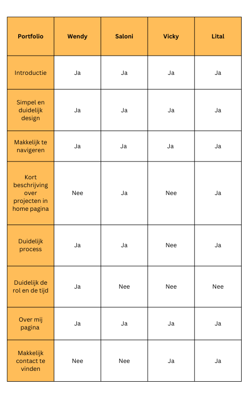

Om de juiste informatie te kunnen halen, moest ik veel informatie zoeken en halen door verschillende onderzoeken te doen. Om een goed onderzoek te doen heb ik verschillende Dot-frame en CMD-methodes gebruikt. Voor elke vraag heb ik paar methodes gebruikt die hebben mij geholpen om zo veel mogelijk de juiste informatie te halen.
- Wat voor tools/ Programmeertalen zijn er om een portfolio te maken? Lees minder
Doel/ inleiding
Deze vraag heb ik gesteld omdat het heel belangrijk voor mij was om goed te kijken waar ik mijn
portfolio kan bouwen.
Omdat ik nooit een portfolio gemaakt heb, ga ik kijken naar de mogelijkheden en wat past bij mij en
vooral omdat wij
kort tijd hebben om de basis van de website af te krijgen.
Om deze vraag te kunnen beantwoorden heb ik literatuuronderzoek en expertinterview gedaan om te
weten waar ik het best mijn portfolio kan bouwen.
Resultaten
Literatuuronderzoek
Door het onderzoek is gebleken dat er verschillende tools, frameworks en programmeertalen zijn waar ik mijn portfolio kan maken. Maar omdat ik nooit een portfolio heb gemaakt, maar ook geen tools en frameworks heb gebruikt weet ik niet zeker wat ik kan gebruiken. Zelf was ik aan het denken om WordPress te gebruiken, want ik heb van de medestudenten gehoord dat het een fijn platform is. Verder dacht ik dat om een tool te gebruiken, ik beter een portfolio kan bouwen en het kost minder tijd. Hier heb ik een account in WordPress gemaakt om te kijken hoe het werkt, maar omdat ik het nooit gebruikt heb moet ik alles leren en het kost ook veel tijd.
Expert Interview
Na het uitvoeren van het onderzoek had ik een gesprek met de docenten over de tools en de mogelijkheden voor het maken van een portfoliowebsite. Hier heb ik de docenten verteld dat ik ervaring heb met HTM, CSS en JS, maar dat ik wel was aan het denken om WordPress te gaan gebruiken. De docenten adviseerden mij dat het aangezien mijn eerdere ervaring, beter voor mij zou zijn om de portfolio met HTML/CSS en JavaScript te maken, aangezien de tijd die wij hebben om de personal portfolio te maken en omdat ik al kennis van HTML, CSS en JS heb. Verder zei meneer Erik dat WordPress ook een rare taal heeft en als ik iets moet aanpassen het beetje moeilijk wordt om het te begrijpen. Verder zei meneer Bardt dat het goed is dat ik deze keuze heb gemaakt om de HTML, CSS en JS te gebruiken, daardoor kan ik mijzelf verbeteren en meer leren.

Conclusie
Na de informatie die ik verzameld heb van de literatuuronderzoek en expertinterview ga ik mijn personal showcase porfolio UI/ UX designer mijn portfolio in HTML, CSS en JS doen, omdat ik hier al kennis van heb. Er zijn verschillende templates/frameworks waar ik mijn portfolio kan bouwen, maar aangezien de tijd en mijn ervaring ga ik er geen gebruik van maken. Verder door mijn onderzoek heb ik ontdekt dat HTML, CSS en JS vermeld in de top 5 van meest gewilde webontwikkelingstalen voor 2023 en door het gebruiken van HTML, CSS en JS kan ik mijzelf verbeteren en meer erover leren.
Hier kunt u meer infotmatie vindenOnderzoek
Volgende stappen
Nadat ik al weet waar ik mijn portfolio ga bouwen, ga ik kijken naar waar kan ik mijn website hosten. Omdat het een personaal portfolio is, ga ik kijken naar waar ik het best mijn portfolio kan hosten.
Bronnen
• https://www.softermii.com/blog/top-programming-languages-and-frameworks-for-software-development
• https://kinsta.com/blog/cms-software/
- Waar kan ik het portfolio hosten? Lees minder
Doel/ inleiding
Deze vraag is belangrijk voor mij, want het hosten van mijn portfolio op een goed platform kan ervoor
zorgen dat het gemakkelijk toegankelijk is voor iedereen die het wil bekijken. Verder wil ik na mijn
studie deze portfolio aanpassen en gebruiken voor de toekomst.

Resultaten
Expert Interview
Voor deze vraag heb ik een expertinterview gedaan met studenten en een docent om te kijken waar ze de
website hosten en wat ze ervan vinden.
Voor de hosting website wilde ik als eerst mijn website via Hera hosten.
Hier heb ik verschillende studenten over gesproken die al een portfolio hebben gemaakt om te kijken waar
zij hun portfolio hosten. Hier ontdekte ik dat veel studenten via Hera de website hosten,
want ze vinden dat het fijner voor hen is omdat ze vanaf het begin Hera gebruiken en omdat het van
school is.
Zelf was ik ook van plan om mijn portfolio ook via Hera te hosten, maar het probleem is dat ik als
ik klaar ben met studie ik het niet meer kan gebruiken.
Hier heb ik meneer Joris gevraagd over hosting. Hij zei dat Hera goed is, maar omdat het een
portfolio waar wij in de toekomst gebruik van willem maken moeten wij goed nadenken of het handig
is om in Hera te hosten. Omdat na het afstuderen kunnen wij onze inloggegevens van de school niet meer
gebruiken daarom dacht ik het beter is om naar een andere host platform te gaan kijken.
Literatuuronderzoek
Verder heb ik een literatuuronderzoek gedaan om te kijken waar ik mijn portfolio kan hosten.
Na het onderzoek is gebleken dat er verschillende host platforms zijn waar ik mijn portfolio kan
hosten. Na het onderzoek had ik een gesprek met meneer Bardt over hosten.
Hij adviseerde mij om Vercel te gebruiken, want Vercel is een goed platform om de portfolio te hosten.
Hier ging kijken hoe Vercel werkt, en of ik het kan gebruiken. Vercel is
een fijn en makkelijk toegankelijk host platform die hoort bij GitHub. Wat ik fijn vind van Vercel en
dat wat meneer Berdt zei dat wanneer ik de aanpassingen in mijn website doe
en via GitHub push wordt het meteen aangepast zonder dat ik op nieuw mij folders en files moet updaten.
Conclusie
Nadat ik verschillende hostingplatformen heb gevonden waar ik mijn portfolio buiten school kan hosten en het advies van meneer Bradt om naar Vercel die bij GitHub hoort te kijken. Vond ik dat Vercel een goed platform is waar ik mijn website kan hosten. Vercel past meteen de aanpassingen aan zonder dat ik op nieuw mij website moet hosten. Daarom heb ik besloten om mijn website in Vercel te hosten.
Hier kunt u meer infotmatie vindenOnderzoek
Volgende stappen
Nadat ik al weet waar ik mijn portfolio ga bouwen en waar ik mijn website ga hosten, kan ik onderzoek doen naar de doelgroep en kijken naar hoe ik een goed portfolio kan maken.
Bronnen
• https://themeisle.com/blog/best-free-website-hosting/#gref
- Hoe maak je een goed UX/UI portfolio? Lees minder
Doel/ inleiding
Deze vraag vond ik heel belangrijk omdat het mij helpt de verwachtingen en normen in de branche te
begrijpen voor het
Deze vraag heb ik gesteld, want ik wil een sterke UX/UI-portfolio creëren die mijn vaardigheden,
ervaring en designproces
laat zien op een manier die aantrekkelijk is voor mijn doelgroep. Een goed UX/UI-portfolio moet blijk
geven van een duidelijk
begrip van user-centered design principes, relevante casestudy's bevatten het proces en hoe ik het
probleem heb opgelost en hoe
ik goed georganiseerd en makkelijk kan navigeren.
Om deze vraag te kunnen beantwoorden heb ik als eerste de doelgroep onderzocht, zodat ik weet wat
de verwachtingen kunnen zijn.
Verder heb ik literatuuronderzoek en expertinterview gedaan om te weten te komen hoe ik een goed
portfolio kan bouwen.
Resultaten
Doelgroep
Mijn doelgroep zijn de docenten en de bedrijven van UI/UX- design, ze kijken naar specifieke vaardigheden en ervaring. Deze vaardigheden kunnen bestaan uit vaardigheid in designsoftware, begrip van gebruikersgerichte ontwerpprincipes, ervaring met gebruikersonderzoek, het hebben van een portfolio met relevant werk en basiskennis van front-end ontwikkeling. Ze verwachten dat wij kunnen aantonen dat wij deze vaardigheden kunnen gebruiken om gebruiksvriendelijke digitale producten te creëren die echte problemen oplossen. Daarom is het belangrijk om over deze vaardigheden en ervaring te beschikken en deze effectief te kunnen presenteren aan de doelgroep.
Expertinterview
Hier ben ik een expert geïnterviewd omdat het ook mijn doelgroep is.
Hier heb ik meneer Joris gesproken over hoe hij een goed portfolio ziet.
Het antwoord was dat als iemand op een vacature solliciteert dan moet zijn portfolio aan bepaalde eisen
voldoen. Verder wil hij alle projecten
zien met een duidelijk beschrijving van de opdracht en wat het te stellen doel. Verder wil hij het
proces van het project zien, dus wat is het probleem,
wat zijn de resultaten en wat is de conclusie.
Literatuuronderzoek
Verder heb ik een literatuuronderzoek gedaan om meer informatie te verzamelen hoe ik een goed portfolio
kan bouwen.
Om een goed portfolio te maken is het van belang om de aandacht te vestigen op de beste en meest
relevante projecten met duidelijke en visueel aantrekkelijke
afbeeldingen en beschrijvingen. Een goede introductie, over mijn pagina, casestudy's, een minimalistisch
ontwerp, georganiseerde projecten, het benadrukken van
designvaardigheden en het gebruik van een logo, font en kleurpallet zijn ook belangrijk om te laten zien
dat ik ook aan kleine dingen denk. Aan de andere kant moet
irrelevant werk, afbeeldingen van slechte kwaliteit en gebrek aan context worden vermeden.
Conclusie
Concluderend, het begrijpen van de doelgroep is belangrijk voor het creëren van een succesvol portfolio op het gebied van UI/UX-design. De doelgroep bestaat uit docenten en bedrijven die op zoek zijn naar specifieke vaardigheden en ervaring, zoals vaardigheid in ontwerpsoftware, user-centered designprincipes, gebruikersonderzoek, relevant werkportfolio en front-end kennis. Interviews met experts en literatuuronderzoek heeft mij geholpen om te begrijpen om een goed portfolio te creëren. Een goed portfolio moet informatie bevatten over mijn achtergrond en motivaties, een samenvatting van mijn vaardigheden en relevante casestudy's die mijn werk laten zien. Het moet beknopt zijn, gemakkelijk te begrijpen en snel mijn sterke punten en ervaringen als UX/UI-designer over te breng. Verder moeten de contact gegevens makkelijk te vinden zijn.
Hier kunt u meer infotmatie vindenOnderzoek
Volgende stappen
Nadat ik heb begrepen wie mijn doelgroep is en hoe ik een goed portfolio kan maken, kan ik gaan onderzoeken hoe een goed portfolio eruit moet zien door te kijken hoe de anderen hun portfolios hebben opgebouwd. Zodat ik meer informatie kan halen over hoe ik mijn portfolio goed kan maken en hoe ik deze het beste kan indelen.
Bronnen
• https://careerfoundry.com/en/tutorials/ux-design-for-beginners/tips-for-your-first-great-ux-portfolio/
• https://www.themuse.com/advice/4-secrets-to-building-a-portfolio-thatll-make-everyone-want-to-hire-you
• https://www.creativeboom.com/tips/six-easy-steps-to-create-a-successful-online-portfolio/
- Hoe ziet een UX/UI designer portfolio eruit Lees minder
Doel/ inleiding
Deze vraag vond ik heel belangrijk omdat het mij helpt de verwachtingen en normen in de branche te
begrijpen voor het
demonstreren van mijn vaardigheden als UX/UI designer. Een goed portfolio is de weg tot het ondersteunen
van vacatures en
het aantrekken van klanten. Daarom moet ik zorgen dat mijn portfolio nauwkeurig mijn beste werk en
ontwerpvaardigheden laatzien.
Als ik begrijp hoe een UX/UI designer portfolio eruitziet, kan ik ook op de hoogte blijven van de
nieuwste ontwerptrends en zorg ik
ervoor dat mijn portfolio zich onderscheidt van de concurrentie en mijn vaardigheden effectief onder de
aandacht brengt.
Hier heb ik available product analyze gedaan om te kijken hoe UI/ UX designer portfolio eruitziet
en hoe ze hun proces laten zien.
Resultaten
Available product analyse
Hier heb ik naar verschillende portfolio’s van 2023 gekeken om te kijken hoe ze het doen en welke
belangrijke informatie ik van die portfolio’s
kan halen. Hier heb ik een tabel gemaakt met belangrijke aspecten die in de portfolio aanwezig moeten
zijn.

Conclusie
Concluderend alle portfolio’s laten veel creativiteit en inspanning zien bij het presenteren van het werk en de vaardigheden die ze tonen. Het is duidelijk dat iedereen de tijd heeft genomen om zijn ervaring en prestaties te laten zien. Er zijn echter een paar verbeteringen die ik in mijn portfolio kan meenemen, zoals het geven van een korte beschrijving van de projecten in de homepagina, het gemakkelijk vinden van contactgegevens op elke pagina. Dat maakt he makkelijk voor de persoon die contact wil opnemen. Het moet duidelijk maken of het werk in samenwerking of individueel is gedaan. Dat is belangrijk, want anders weten de werkgevers niet wat je echt kunt en wat je zelf hebt gedaan. Over het algemeen moet een succesvol portfolio de ervaringen en vaardigheden duidelijk laten zien, met name door de projecten waaraan ik heb gewerkt en mijn rol in elk project gedetailleerd weer te geven. Bovendien is een duidelijke beschrijving van de opdracht, het probleem en het doel van elk project en wat zijn de resultaten. Het is ook belangrijk om contactgegevens gemakkelijk toegankelijk te maken, zodat de werkgevers mij gemakkelijk kunnen bereiken. Door deze sleutelelementen in mijn portfolio aan te pakken, kan ik mijn unieke kwaliteiten en vaardigheden effectief latenzien.
Hier kunt u meer infotmatie vindenOnderzoek
Volgende stappen
Na het onderzoeken van verschillende portfolio's en het uitvoeren van beschikbare productanalyse, kan ik beginnen met brainstormen en flowchart maken om te onderzoeken hoe ik mijn portfolio kan structureren en mijn werk op de best mogelijke manier kan presenteren.